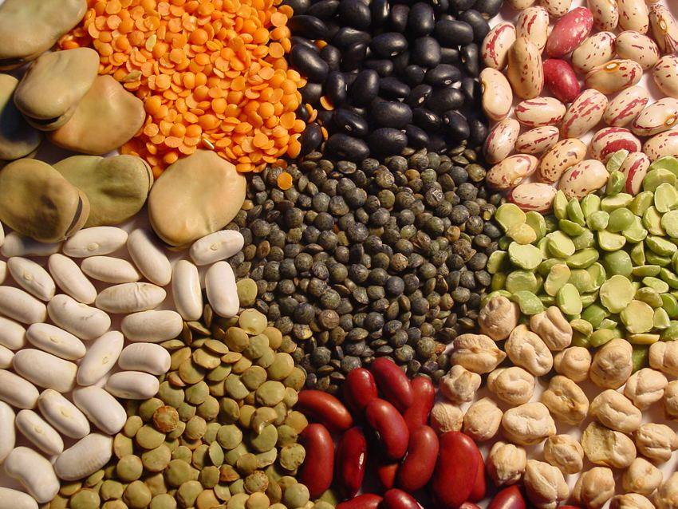

Légumineuses
Import-Export de toutes variétés de légumineuses
Import-Export de toutes variétés de légumineuses
Les Greniers du Saïss assure l'import et l'export de toutes variétés de légumineuses : lentilles, pois chiches, fèves, féverole, haricots, pois secs, petit pois. Nos lentilles proviennent à la fois de notre production locale et de l'importation, notamment les variétés Richlea et Eston. Nous sélectionnons nos fournisseurs selon des critères stricts de qualité et proposons des produits adaptés aux spécifications de chaque marché.

Nos variétés disponibles

Conditionnements
Sacs de 25 kg, 50 kg ou big bags de 1 000 kg, marquage personnalisé et certification d'origine disponibles.
Applications
Alimentaire
Consommation directe, plats traditionnels, conserves et cuisines du monde.
Import / Export
Livraison internationale, documentation complète, conditionnement aux normes de l'import et de l'export.
Agriculture
Semences sélectionnées pour la culture, fixation d'azote et rotation des cultures.